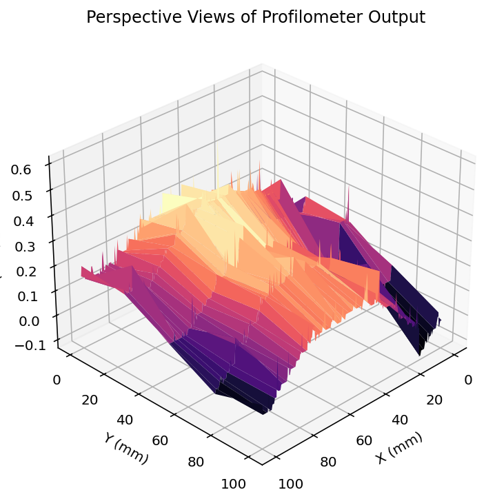
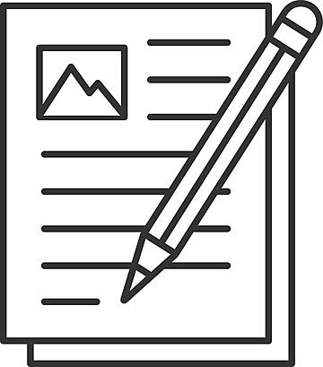
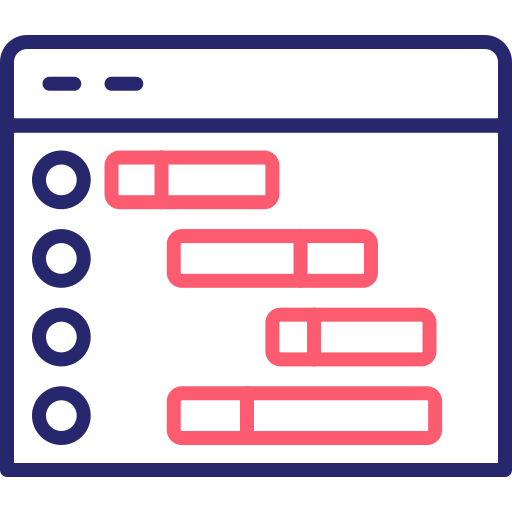

Fully realized design team project, where a Surface Profilometer was designed, constructed and tested for the purpose of producing 3D topographies.
Summer placement work on the simulation and optical analysis of the MORFEO adaptive optics system for the ELT. Focus on image modeling, resolution, and AO behavior.

A selection of short essays and reflections, covering topics in physics, philosophy of science, and scientific history.
A curated group of past academic reports, showcasing formal lab writing, structured data analysis, and uncertainty analysis using LaTeX.

A custom Gantt chart created from scratch to support project planning and time allocation. Designed with clear structure and soft tones for easy presentability, with the end goal of making it readily customizable for any user.